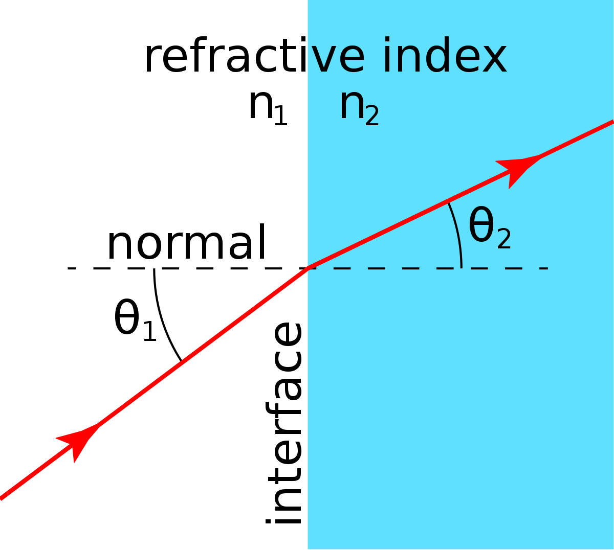
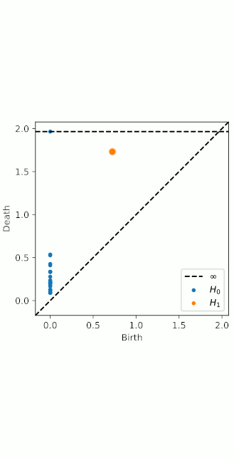
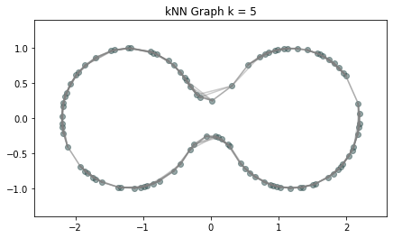
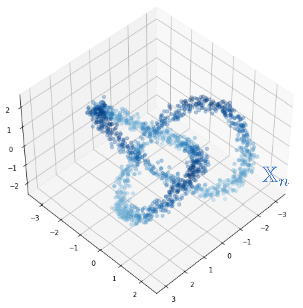
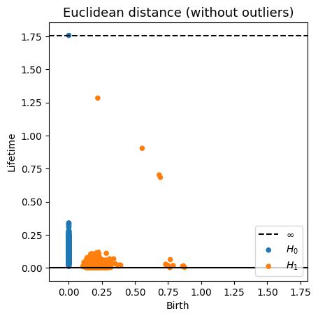
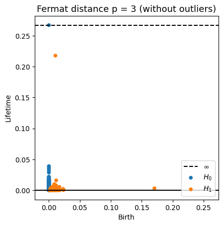
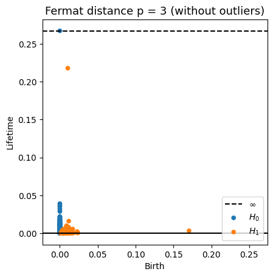

The Fermat principle in Riemannian geometry
XIMENA FERNANDEZ
Joint work with E. Borghini, G. Mindlin and P. Groisman
Geometry Seminar - King's College of London
4 March 2025
Motivation
Motivation
Let $\mathbb{X}_n = \{x_1,...,x_n\}\subseteq \mathbb{R}^D$ be a finite sample.
Motivation
Let $\mathbb{X}_n = \{x_1,...,x_n\}\subseteq \mathbb{R}^D$ be a finite sample.
Assume that:
- $\mathbb{X}_n$ is a sample of a compact manifold $\mathcal M$ of dimension $d$.
- The points are sampled according to a density $f\colon \mathcal M\to \mathbb R$.
Goal: Infer topological properties from $(\mathcal{M}, f)$.
Density-based geometry


Fermat principle
The path taken by a ray between two given points is is the extreme of the functional \[ \gamma\mapsto \int_{0}^1\eta(\gamma_t)||\dot{\gamma}_t|| dt \] with $\eta$ is the refraction index.
Density-based geometry
(Hwang, Damelin & Hero, 2016)
Let $\mathcal M \subseteq \mathbb{R}^D$ be a manifold and let $f\colon\mathcal{M}\to \mathbb{R}_{>0}$ be a smooth density.
For $q>0$, the deformed Riemannian distance* in $\mathcal{M}$ is \[d_{f,q}(x,y) = \inf_{\gamma} \int_{I}\frac{1}{f(\gamma_t)^{q}}||\dot{\gamma}_t|| dt \] over all $\gamma:I\to \mathcal{M}$ with $\gamma(0) = x$ and $\gamma(1)=y$.

* More general, if $(\mathcal{M}, g)$ is a Riemannian manifold, then $d_{f,q}$ is the Riemannian distance induced by the tensor $g_q= f^{-2q} g$.
Fermat distance
(Mckenzie & Damelin, 2019) (Groisman, Jonckheere & Sapienza, 2022)
Let $\mathbb{X}_n = \{x_1,...,x_n\}\subseteq \mathbb{R}^D$ be a finite sample.
For $p> 1$, the Fermat distance between $x,y\in \mathbb{R}^D$ is defined by \[ d_{\mathbb{X}_n, p}(x,y) = \inf_{\gamma} \sum_{i=0}^{r}|x_{i+1}-x_i|^{p} \] over all paths $\gamma=(x_0, \dots, x_{r+1})$ of finite length with $x_0=x$, $x_{r+1} = y$ and $\{x_1, x_2, \dots, x_{r}\}\subseteq \mathbb{X}_n$.

Fermat distance

Fermat distance


Convergence results
$d_{\mathbb X_n, p}$ is an estimator of $d_{f,q}$ if $q=(p-1)/d$.
Convergence results
Previous work
Set $q = (p-1)/d.$
- (Hwang, Damelin & Hero, 2016) If $L_{\mathbb X_n, p}(x,y) := \inf_{\gamma}\sum_{i=0}^{k}d_{\mathcal M}(x_{i+1},x_i)^{p}$ over all paths $\gamma=(x_0, \dots, x_{r+1})$ of finite length with $x_0=x$, $x_{r+1} = y$ and $\{x_1, \dots, x_r\}\subseteq \mathbb{X}_n$, then \[C(n,p,d) L_{\mathbb{X}_n,p}\underset{n \to \infty}{\overset{a.s}{\rightrightarrows}}d_{f,q}~~~ \text{ in } \{(x,y)\in \mathcal{M}: d_{\mathcal M}(x,y)\geq b\}.\]
- (Groisman, Jonckheere & Sapienza, 2022) If there exists $S\subseteq \mathbb{R}^d$ an open connected set and $\phi:S \to \mathbb{R}^D$ an isometric transformation such that $\phi(\bar S)=\mathcal{M}.$ \[ \lim_{n\to +\infty} C(n,p,d) d_{\mathbb{X}_n, p}(x,y) = d_{f,q}(x,y )~ \text{almost surely.}\]
Convergence results
(F., Borghini, Mindlin & Groisman, 2023)
Let $\mathcal{M}$ be a closed smooth $d$-dimensional manifold embedded in $\mathbb{R}^D$.
\[\big(\mathbb{X}_n, C(n,p,d) d_{\mathbb{X}_n,p}\big)\xrightarrow[n\to \infty]{GH}\big(\mathcal{M}, d_{f,q}\big) ~~~ \text{ for } q = (p-1)/d\]
Recall that \[d_{H}\big((X, d)(Y,d)\big) = \max \big\{\sup_{x\in X}d(x,Y), \sup_{y\in Y}d(X,y)\big\}, ~~\text{for }X,Y\subseteq (Z,d)\] \[d_{GH}\big((X, d_X),(Y,d_Y)\big)= \inf_{\substack{Z \text{ metric space}\\ f:X\to Z, g:Y\to Z \text{ isometries}}}d_H(f(X), g(Y))\]
Convergence results
(F., Borghini, Mindlin & Groisman, 2023)
Let $\mathcal{M}$ be a closed smooth $d$-dimensional manifold embedded in $\mathbb{R}^D$.
\[\big(\mathbb{X}_n, C(n,p,d) d_{\mathbb{X}_n,p}\big)\xrightarrow[n\to \infty]{GH}\big(\mathcal{M}, d_{f,q}\big) ~~~ \text{ for } q = (p-1)/d\]
Theorem (F., Borghini, Mindlin, Groisman, 2023)
Let $\mathbb{X}_n$ be a sample of a closed manifold $\mathcal M$ of dimension $d$, drawn according to a density $f\colon \mathcal M\to \mathbb R$.
Given $p>1$ and $q=(p-1)/d$, there exists a constant $\mu = \mu(p,d)$ such that for every $\lambda \in \big((p-1)/pd, 1/d\big)$ and $\varepsilon>0$ there exist $\theta>0$ satisfying
\[
\mathbb{P}\left( d_{GH}\left(\big(\mathcal{M}, d_{f,q}\big), \big(\mathbb{X}_n, {\scriptstyle \frac{n^{q}}{\mu}} d_{\mathbb{X}_n, p}\big)\right) > \varepsilon \right) \leq \exp{\left(-\theta n^{(1 - \lambda d) /(d+2p)}\right)}
\]
for $n$ large enough.
Fermat-distance
Computational implementation
- Complexity:
$O(n^3)$
reducible to $O(n^2*k*\log(n))$ using the $k$-NN-graph (for $k = O(\log n)$ the geodesics belong to the $k$-NN graph with high probability).
- Python library:
fermat
- Computational experiments:
ximenafernandez/intrinsicPH
Applications to homology inference
Homology inference
Let $X$ be a topological space and let $\mathbb{X}_n = \{x_1,...,x_n\}$ be a finite sample of $X$.
Q: How to infer topological properties of $X$ from $\mathbb{X}_n$?
Point cloud
$\mathbb{X}_n \subset \mathbb{R}^D$

For $\epsilon>0$, the $\epsilon$-thickening of $\mathbb{X}_n$:
\[\displaystyle U_\epsilon = \bigcup_{x\in \mathbb{X}_n}B_{\epsilon}(x)\] 
Theorem (Niyogi, Smale & Weinberger, 2008). Given $\mathcal{M}$ a compact submanifold of $\mathbb{R}^D$ of dimension $k$ and $\mathbb{X}_n$ a set of i.i.d. $n$ points drawn according to the uniform probability measure on $\mathcal{M}$, then $$ U_\epsilon \simeq \mathcal{M}$$ with probability $>1-\delta$ if $0<\epsilon< \frac{\tau_\mathcal{M}}{2}$ and $n> \beta_1 \left(\log(\beta_2)+\log\left(\frac{1}{\delta}\right)\right)$.*
*Here $\beta_1=\frac{\mathrm{vol}(\mathcal{M})}{cos^k(\theta_1) \mathrm{vol(B^k_{\epsilon/4})}}$, $\beta_2=\frac{\mathrm{vol}(\mathcal{M})}{\cos^k(\theta_2)\mathrm{vol}(B^k_{\epsilon/8})}$ and $\theta_1=\arcsin\left(\frac{\epsilon}{8\tau_\mathcal M}\right),$ $\theta_2=\arcsin\left(\frac{\epsilon}{16\tau_\mathcal M}\right)$.
Homology inference
Let $X$ be a topological space and let $\mathbb{X}_n = \{x_1,...,x_n\}$ be a finite sample of $X$.
Q: How to infer topological properties of $X$ from $\mathbb{X}_n$?
Point cloud
$\mathbb{X}_n \subset \mathbb{R}^D$
Evolving thickenings

Homology inference
Let $X$ be a topological space and let $\mathbb{X}_n = \{x_1,...,x_n\}$ be a finite sample of $X$.
Q: How to infer topological properties of $X$ from $\mathbb{X}_n$?
Point cloud
$\mathbb{X}_n \subset \mathbb{R}^D$
Evolving thickenings
Filtration of simplicial complexes

Homology inference
Let $X$ be a topological space and let $\mathbb{X}_n = \{x_1,...,x_n\}$ be a finite sample of $X$.
Q: How to infer topological properties of $X$ from $\mathbb{X}_n$?
Metric space
$(\mathbb{X}_n, d)$
Filtration of simplicial complexes
Persistence diagram/barcode 
From point clouds to (filtered) complexes
Let $(\mathbb{X}_n, d)$ be a finite set of points with a metric.
Given a parameter $\epsilon>0$, the Vietoris-Rips complex $\mathrm{Rips}_{\epsilon}$ is defined as \[\mathrm{Rips}_{\epsilon}(\mathbb{X}_n) := \{\sigma \subseteq \mathbb{X}_n\colon \forall u,v\in \sigma, d(u,v)\leq \epsilon\}\]
Equivalently, $\mathrm{Rips}_\epsilon$ contains all simplices whose diameter is less than or equal to $\epsilon$.

Image from: Bastian Rieck. Topological Data Analysis for Machine Learning.
From point clouds to (filtered) complexes
Let $(\mathbb{X}_n, d)$ be a finite set of points wiht a metric.
Given a parameter $\epsilon>0$, the Vietoris-Rips complex $\mathrm{Rips}_{\epsilon}$ is defined as \[\mathrm{Rips}_{\epsilon}(\mathbb{X}_n) := \{\sigma \subseteq \mathbb{X}_n\colon \forall u,v\in \sigma, d(u,v)\leq \epsilon\}\]
Equivalently, $\mathrm{Rips}_\epsilon$ contains all simplices whose diameter is less than or equal to $\epsilon$.
Goal: Track the evolution of the homology of $\mathrm{Rips}_\epsilon$ as the value of $\epsilon$ increases.

Image from: Bastian Rieck. Topological Data Analysis for Machine Learning.
Persistent homology
- A filtration of simplicial complexes is a sequence of nested simplicial complexes \[K_0 \hookrightarrow K_1 \hookrightarrow K_2 \hookrightarrow \dots \hookrightarrow K_s \]
- A filtration $\{K_i\}$ of simplicial complexes induces a sequence of homology groups $\{H_d(K_i)\}$ along with homomorphisms $f_d^{i,j}:H_d(K_i) \to H_d(K_j)$ induced by $K_i\subseteq K_j$ for every $i\leq j$ \[H_d(K_0) \rightarrow H_d(K_1) \rightarrow H_d(K_2) \rightarrow \dots \rightarrow H_d(K_s) .\]
- Given $i\leq j$, the persistent homology group $H_d^{i,j}$ is defined as \[H_d^{i,j} :=\frac{Z_d(K_i)}{B_d(K_j)\cap Z_d(K_i)} = \mathrm{Im}(f_d^{i,j}).\]
- Persistent homology classes.
- Birth in $K_i$: $C\in H_d(K_i)$, but $C\notin H_d^{i−1,i}$
- Death in $K_j$: once $C$ is created in $K_i$, $C\in H_d^{i, j-1}$ but $C\notin H_d^{i, j}$
Persistent homology
- Structure Theorem.
-
The persistence module $\{(H_d(K_i), f_d^{ij})\colon i,j \}$ has a unique decomposition into indecomposables, thus producing a barcode/persistence diagram.
Persistent homology
Metric space: $(\mathbb X_n, d_E)\sim (\mathcal M, d_E)$


$\bullet ~ ~\mathrm{Rips}_\epsilon(\mathcal{M}, d_E)\simeq \mathcal{M}$ for $\epsilon < 2 \sqrt{\frac{D+1}{2D}}\mathrm{rch}(\mathcal{M})~~$ (Kim, Shin, Chazal, Rinaldo & Wasserman, 2020)
Persistent homology
Metric space: $(\mathbb X_n, d_{kNN})\sim (\mathcal M, d_\mathcal{M})~~~$(Bernstein, De Silva, Langford & Tenenbaum, 2000)


$\bullet ~ ~\mathrm{Rips}_\epsilon(\mathcal{M}, d_\mathcal{M})\simeq \mathcal{M}$ for $\epsilon < \mathrm{conv}(\mathcal{M}, d_{\mathcal{M}})~~$ (Hausmann, 1995; Latschev, 2001)
Persistent homology
Metric space: $(\mathbb X_n, d_{kNN})\sim (\mathcal M, d_\mathcal{M})$


Persistent homology
Metric space: $(\mathbb X_n, d_{kNN})\sim (\mathcal M, d_\mathcal{M})$

Persistent homology
Metric space: $(\mathbb X_n, d_{kNN})\sim (\mathcal M, d_\mathcal{M})$


The metric structure
Desired properties of a metric:$\checkmark$ 'Independence' on the ambient space (intrinsic).
$\checkmark$ Robustness to noise/outliers.
Fermat-based persistence diagrams


Fermat distance
Fermat-based persistence diagrams


Fermat-based persistence diagrams


Convergence of persistence diagrams
\[\big(\mathbb{X}_n, C(n,p,d) d_{\mathbb{X}_n,p}\big)\xrightarrow[n\to \infty]{GH}\big(\mathcal{M}, d_{f,q}\big) ~~~ \text{ for } q = (p-1)/d\]
+Stability \[d_B\Big( \mathrm{dgm}\big(\mathrm{Rips}(X, d_X)\big), \mathrm{dgm}\big(\mathrm{Rips}(Y, d_Y\big)\Big)\leq 2 d_{GH}\big((X,d_X),(Y,d_Y)\big)\]
Convergence of persistence diagrams
\[\big(\mathbb{X}_n, C(n,p,d) d_{\mathbb{X}_n,p})\big)\xrightarrow[n\to \infty]{GH}\big(\mathcal{M}, d_{f,q}\big) ~~~ \text{ for } q = (p-1)/d\]
+Stability \[d_B\Big( \mathrm{dgm}\big(\mathrm{Rips}(\mathbb X_n, C(n,p,d) d_{\mathbb{X}_n,p})\big), \mathrm{dgm}\big(\mathrm{Rips}(\mathcal M, d_{f,q})\big)\Big)\leq 2 d_{GH}\big((\mathbb X_n,C(n,p,d) d_{\mathbb{X}_n,p}),(\mathcal M,d_{f,q})\big)\]
$\Downarrow$\[\mathrm{dgm}(\mathrm{Rips}(\mathbb{X}_n, {C(n,p,d)} d_{\mathbb{X}_n,p}))\xrightarrow[n\to \infty]{B}\mathrm{dgm}(\mathrm{Rips}(\mathcal{M}, d_{f,q})) ~~~ \text{ for } q = (p-1)/d\]
Fermat-based persistence diagrams
Robustness to outliers
  



Fermat-based persistence diagrams
Robustness to outliers
Prop (F., Borghini, Mindlin, Groisman, 2023)
Let $\mathbb{X}_n$ be a sample of $\mathcal{M}$ and let $Y\subseteq \mathbb{R}^D\smallsetminus \mathcal{M}$ be a finite set of outliers.
Let $\delta = \displaystyle \min\Big\{\min_{y\in Y} d_E(y, Y\smallsetminus \{y\}), ~d_E(\mathbb X_n, Y)\Big\}$.
Then, for all $k>0$ and $p>1$,
\[
\mathrm{dgm}_k(\mathrm{Rips}_{<\delta^p}(\mathbb{X}_n \cup Y, d_{\mathbb{X}_n\cup Y, p})) = \mathrm{dgm}_k(\mathrm{Rips}_{<\delta^p}(\mathbb{X}_n, d_{\mathbb{X}_n, p}))
\]
where $\mathrm{Rips}_{<\delta^p}$ stands for the Rips filtration up to parameter $\delta^{p}$ and $\mathrm{dgm}_k$ for the persistent homology of deg $k$.
Time series Analysis
Topological analysis of time series
- Signal:
$\varphi:\mathbb R \to \mathbb{R}$

- Delay embedding: Given $T$ the time delay and $D$ the embedding dimension. \[\mathcal{M}_{T,D}(\varphi) = \{\big(\varphi(t), \varphi(t+T), \varphi(t+2 T) \dots, \varphi(t+(D-1)T)\big): t\in \mathbb R\}\subseteq \mathbb{R}^D\]


Topological analysis of time series
- Signal:
$\varphi:\mathbb R \to \mathbb{R}$
- Delay embedding: Given $T$ the time delay and $D$ the embedding dimension. \[\mathcal{M}_{T,D} (\varphi) = \{\big(\varphi(t), \varphi(t+T), \varphi(t+2 T) \dots, \varphi(t+(D-1)T)\big): t\in \mathbb R\}\subseteq \mathbb{R}^D\]
- Limit set: Given $(\mathcal M, \phi)$ a dynamical system and $x_0\in \mathcal M$, \[\mathcal A_{x_0} = \{x\in \mathcal M: \exists t_i\to \infty \text { with } \phi_{t_i}(x_0)\to x\}.\]
- Theorem (Takens).* Let $\mathcal{M}$ be a smooth, compact, Riemannian manifold. Let $T> 0$ be a real number and let $D > 2 \mathrm{dim}(\mathcal{M})$ be an integer. Then, for generic $\phi \in C^2(\mathbb{R} \times \mathcal{M}, \mathcal{M})$, $F\in C^2(\mathcal{M}, \mathbb{R})$ and $x_0\in \mathcal M$, if $\varphi_{x_0} = F(\phi_\bullet(x_0))$ is an observation of $(\mathcal M, \phi)$, then the limit set $\mathcal A_{x_0}$ is 'diffeomorphic'$^{**}$ to $\mathcal{M}_{T,D} (\varphi_{x_0})$.
** There exists $\psi:\mathcal M\to \mathbb R^{D}$ an embedding such that $\psi|_{\mathcal A_{x_0}}: \mathcal A_{x_0}\to \mathcal{M}_{T,D} (\varphi_{x_0})$ is a bijection.
*Corollary 5, Detecting strange attractors in tubulence, F. Takens, 1971.
Anomaly detection
Electrocardiogram

Source data: PhysioNet Database https://physionet.org/about/database/
Anomaly detection
Electrocardiogram

Anomaly detection
Electrocardiogram


Anomaly detection
Electrocardiogram


Anomaly detection
Electrocardiogram
\[t\mapsto \mathrm{dgm_1}(\mathrm{Rips}(\mathcal{M}_{T, D}\varphi|_{[0,t]}))=: \mathcal{D}_t\]
Anomaly detection
Electrocardiogram
Approximate Derivative: Given a time step $\varepsilon>0$\[\dfrac{d_{B}(\mathcal{D}_t, \mathcal{D}_{t-\varepsilon})}{\varepsilon}\]

Change-points detection
Birdsongs

Source data: Private experiments. Laboratory of Dynamical Systems, University of Buenos Aires.
Change-points detection
Birdsongs

Change-points detection
Birdsongs

Change-points detection
Birdsongs


Change-points detection
Birdsongs
Aproximate derivative

Change-points detection
Birdsongs

References
- Source: X. Fernandez, E. Borghini, G. Mindlin, P. Groisman. Intrinsic persistent homology via density-based metric learning. Journal of Machine Learning Research 24(75):1−42 (2023).
- Github Repository: ximenafernandez/intrinsicPH
- Tutorial: Intrinsic persistent homology. AATRN Youtube Channel (2021)
- Python Library: fermat